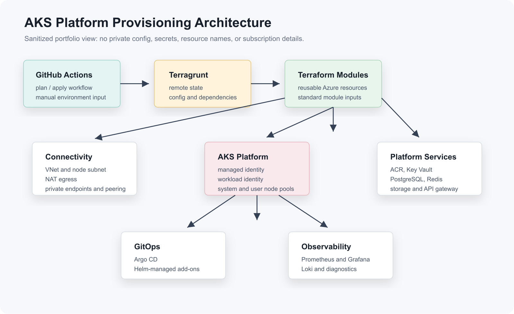

AKS Platform Deep Dive: Terraform, Terragrunt, and GitOps¶
Overview¶
I designed and maintained an Azure Kubernetes Service platform using Terraform, Terragrunt, GitHub Actions, GitOps, and an observability stack. The goal was to make infrastructure repeatable across environments while keeping the Terraform code modular, reviewable, and safe to operate.
This page is the implementation deep dive behind the AKS platform case study. It focuses on the structure, dependency model, provisioning flow, and production-readiness decisions.
The platform separates reusable infrastructure logic from environment-specific values:
| Layer | Purpose |
|---|---|
| Terraform modules | Reusable Azure building blocks such as AKS, networking, Key Vault, PostgreSQL, Redis, container registry, private endpoints, storage, and API gateway resources. |
| Terragrunt resources | Thin orchestration wrappers that connect modules with environment inputs, dependencies, providers, and remote state. |
| GitHub Actions | Manual deployment workflow for plan, apply, refresh, and destroy operations. |
| GitOps | Kubernetes application and add-on deployment through Argo CD and Helm. |
| Observability | Metrics, logs, dashboards, and AKS diagnostics using Prometheus, Grafana, Loki, and related collectors. |
Production Readiness Snapshot¶
| Capability | Evidence in this implementation |
|---|---|
| Environment separation | Terragrunt reads private environment YAML and passes sanitized values into reusable modules. |
| Dependency control | Resource wrappers consume upstream outputs instead of hardcoding resource names or IDs. |
| Operational safety | GitHub Actions scopes each run to one selected resource folder and supports plan-only workflows. |
| Identity and secrets | Managed identity, workload identity, OIDC issuer, and Key Vault secrets provider are enabled. |
| Network posture | Dedicated VNet/subnet, NAT egress, private endpoint patterns, and peering modules are documented. |
| Observability | Prometheus, Grafana, Loki, collectors, and AKS diagnostic settings are included in the platform layer. |
Architecture¶

Repository Pattern¶
The infrastructure follows a clear separation of concerns:
infrastructure/
config/
dev.yaml
qa.yaml
prod.yaml
modules/
aks-cluster/
acr/
keyvault/
postgresql-flexible-server/
private-endpoint/
redis/
storage-account/
vnet-peering/
resources/
aks-cluster/terragrunt.hcl
acr/terragrunt.hcl
key-vault/terragrunt.hcl
postgresql-flexible-server/terragrunt.hcl
helm-charts/
argocd/
external-charts/
.github/workflows/
terragrunt-cd.yaml
The config/ layer is required for this Terragrunt pattern because it provides environment-specific values at deploy time. The private project configuration is intentionally not copied into this portfolio. Instead, this documentation uses a fresh sample config file at examples/aks-platform/config/dev.yaml.
Sample Config Structure¶
Terragrunt reads a selected environment file and passes those values into Terraform modules. A public-safe sample looks like this:
stack_name: aks-platform
stack_version: "1.0.0"
location: eastus
deployment_storage_resource_group_name: rg-tfstate-example
deployment_storage_account_name: sttfstateexample001
deployment_storage_container_name: tfstate
tags:
application_name: aks-platform
owner: platform-team
environment: dev
project: portfolio-sample
terraform_script_version: "1.0.0"
aks_name: aks-platform-dev
aks_sku_tier: Free
kubernetes_version: "1.29.0"
is_prod_env: false
aks_vnet_name: vnet-aks-platform-dev
aks_node_subnet_name: snet-aks-nodes-dev
address_space:
- 10.240.0.0/16
address_prefixes:
- 10.240.1.0/24
network_plugin: azure
network_plugin_mode: overlay
network_policy: cilium
pod_cidr: 10.241.0.0/16
service_cidr: 10.242.0.0/16
dns_service_ip: 10.242.0.10
default:
min_count: 1
max_count: 3
vm_size: Standard_D4s_v5
os_disk_type: Managed
os_disk_size_gb: 128
os_sku: Ubuntu
user:
min_count: 1
max_count: 5
vm_size: Standard_D8s_v5
os_disk_size_gb: 128
node_pool_zones:
- 1
- 2
- 3
These values are example-only and should be replaced before any real deployment.
AKS Design¶
The AKS module provisions the core cluster and surrounding network layer. Key design choices included:
| Area | Implementation |
|---|---|
| Cluster identity | System-assigned managed identity for Azure integration. |
| Workload identity | OIDC issuer and workload identity enabled for safer pod-to-Azure authentication. |
| Secrets | Key Vault secrets provider enabled with secret rotation. |
| Node pools | Separate system, application, and observability node pools. |
| Autoscaling | Autoscaling enabled for system and user workloads. |
| Networking | Dedicated virtual network and node subnet, service CIDR, pod CIDR, NAT egress, and private connectivity patterns. |
| Security | Azure policy enabled for production-style environments and scoped role assignments for cluster operations. |
| Diagnostics | Log Analytics workspace and diagnostic settings for AKS cluster autoscaler logs. |
Terragrunt Orchestration¶
Terragrunt acts as the deployment layer. Each resource folder points to a Terraform module and wires in upstream dependencies.
Sanitized example:
terraform {
source = "../../modules/aks-cluster"
}
include "root" {
path = find_in_parent_folders()
}
dependency "resource_group" {
config_path = "../aks-resource-group"
}
dependency "public_ip" {
config_path = "../public-ip"
}
locals {
environment = lower(get_env("ENV", "dev"))
env = yamldecode(file("${get_terragrunt_dir()}/../../config/${local.environment}.yaml"))
}
inputs = {
aks_name = local.env.aks_name
location = local.env.location
resource_group_name = dependency.resource_group.outputs.resource_group_name
resource_group_id = dependency.resource_group.outputs.resource_group_id
outbound_ip_id = dependency.public_ip.outputs.egress_ip_id
default_node_pool = {
min_count = local.env.default.min_count
max_count = local.env.default.max_count
vm_size = local.env.default.vm_size
}
}
This pattern keeps resource dependencies explicit while avoiding repeated Terraform code across environments.
Sample Provisioning Examples¶
These examples show the provisioning flow in a public-safe way. Names, regions, CIDRs, SKU sizes, state account names, and environment values are placeholders.
1. Root Terragrunt Remote State¶
The root Terragrunt file defines common backend and provider behavior. Each resource stores state under a predictable key based on the selected environment and resource path.
remote_state {
backend = "azurerm"
config = {
resource_group_name = local.global.deployment_storage_resource_group_name
storage_account_name = local.global.deployment_storage_account_name
container_name = local.global.deployment_storage_container_name
key = "${local.stack_name}/${local.environment}/${path_relative_to_include()}/terraform.tfstate"
}
}
locals {
environment = lower(get_env("ENV", "dev"))
global = yamldecode(file("${get_terragrunt_dir()}/../config/${local.environment}.yaml"))
stack_name = local.global.stack_name
}
inputs = {
location = local.global.location
tags = {
Application = local.global.tags.application_name
Environment = local.environment
ManagedBy = "terraform"
}
}
2. Resource Group Provisioning¶
The resource group is usually one of the first resources because other modules depend on its name and ID.
terraform {
source = "../../modules/resource-group"
}
include "root" {
path = find_in_parent_folders()
}
locals {
environment = lower(get_env("ENV", "dev"))
global = yamldecode(file("${get_terragrunt_dir()}/../../config/${local.environment}.yaml"))
}
inputs = {
resource_group_name = "rg-${local.global.stack_name}-${local.environment}"
location = local.global.location
}
Example Terraform module logic:
resource "azurerm_resource_group" "this" {
name = var.resource_group_name
location = var.location
tags = var.tags
}
output "resource_group_name" {
value = azurerm_resource_group.this.name
}
output "resource_group_id" {
value = azurerm_resource_group.this.id
}
3. Public IP for Egress¶
The AKS cluster can depend on a public IP module when outbound traffic needs a stable egress path through NAT.
terraform {
source = "../../modules/public-ip"
}
include "root" {
path = find_in_parent_folders()
}
dependency "resource_group" {
config_path = "../aks-resource-group"
}
locals {
environment = lower(get_env("ENV", "dev"))
global = yamldecode(file("${get_terragrunt_dir()}/../../config/${local.environment}.yaml"))
}
inputs = {
public_ip_name = "pip-aks-egress-${local.environment}"
location = local.global.location
resource_group_name = dependency.resource_group.outputs.resource_group_name
allocation_method = "Static"
sku = "Standard"
}
Example Terraform module logic:
resource "azurerm_public_ip" "egress" {
name = var.public_ip_name
location = var.location
resource_group_name = var.resource_group_name
allocation_method = var.allocation_method
sku = var.sku
tags = var.tags
}
output "egress_ip_id" {
value = azurerm_public_ip.egress.id
}
4. AKS Cluster Provisioning¶
The AKS resource pulls outputs from the resource group and public IP resources. This keeps provisioning ordered without hardcoding values.
terraform {
source = "../../modules/aks-cluster"
}
include "root" {
path = find_in_parent_folders()
}
dependency "resource_group" {
config_path = "../aks-resource-group"
}
dependency "public_ip" {
config_path = "../public-ip"
}
locals {
environment = lower(get_env("ENV", "dev"))
global = yamldecode(file("${get_terragrunt_dir()}/../../config/${local.environment}.yaml"))
}
inputs = {
aks_name = local.global.aks_name
dns_prefix = local.global.aks_name
location = local.global.location
resource_group_name = dependency.resource_group.outputs.resource_group_name
resource_group_id = dependency.resource_group.outputs.resource_group_id
outbound_ip_id = dependency.public_ip.outputs.egress_ip_id
network_plugin = local.global.network_plugin
network_plugin_mode = local.global.network_plugin_mode
network_policy = local.global.network_policy
service_cidr = local.global.service_cidr
dns_service_ip = local.global.dns_service_ip
pod_cidr = local.global.pod_cidr
default_node_pool = {
min_count = local.global.default.min_count
max_count = local.global.default.max_count
vm_size = local.global.default.vm_size
os_disk_type = local.global.default.os_disk_type
os_disk_size_gb = local.global.default.os_disk_size_gb
os_sku = local.global.default.os_sku
}
user_node_pool = {
min_count = local.global.user.min_count
max_count = local.global.user.max_count
vm_size = local.global.user.vm_size
os_disk_size_gb = local.global.user.os_disk_size_gb
node_pool_zones = local.global.user.node_pool_zones
}
}
Example Terraform module logic:
resource "azurerm_virtual_network" "aks" {
name = var.aks_vnet_name
address_space = var.address_space
location = var.location
resource_group_name = var.resource_group_name
}
resource "azurerm_subnet" "nodes" {
name = var.aks_node_subnet_name
resource_group_name = var.resource_group_name
virtual_network_name = azurerm_virtual_network.aks.name
address_prefixes = var.address_prefixes
}
resource "azurerm_kubernetes_cluster" "aks" {
name = var.aks_name
location = var.location
resource_group_name = var.resource_group_name
dns_prefix = var.dns_prefix
oidc_issuer_enabled = true
workload_identity_enabled = true
identity {
type = "SystemAssigned"
}
key_vault_secrets_provider {
secret_rotation_enabled = true
}
default_node_pool {
name = "system"
auto_scaling_enabled = true
min_count = var.default_node_pool.min_count
max_count = var.default_node_pool.max_count
vm_size = var.default_node_pool.vm_size
vnet_subnet_id = azurerm_subnet.nodes.id
}
network_profile {
network_plugin = var.network_plugin
network_plugin_mode = var.network_plugin_mode
network_policy = var.network_policy
service_cidr = var.service_cidr
dns_service_ip = var.dns_service_ip
pod_cidr = var.pod_cidr
outbound_type = "userAssignedNATGateway"
load_balancer_sku = "standard"
}
tags = var.tags
}
5. User Node Pool Provisioning¶
Application workloads run on a separate node pool so platform add-ons and user workloads can scale independently.
resource "azurerm_kubernetes_cluster_node_pool" "user" {
name = "userapps"
kubernetes_cluster_id = azurerm_kubernetes_cluster.aks.id
auto_scaling_enabled = true
min_count = var.user_node_pool.min_count
max_count = var.user_node_pool.max_count
vm_size = var.user_node_pool.vm_size
os_disk_size_gb = var.user_node_pool.os_disk_size_gb
zones = var.user_node_pool.node_pool_zones
node_labels = {
workload = "application"
}
}
6. Provisioning Command Flow¶
In GitHub Actions, the same flow runs through workflow inputs. Locally, a sanitized sequence looks like this:
export ENV=dev
cd resources/aks-resource-group
terragrunt init
terragrunt plan
terragrunt apply
cd ../public-ip
terragrunt init
terragrunt plan
terragrunt apply
cd ../aks-cluster
terragrunt init
terragrunt plan
terragrunt apply
The dependency chain means the AKS module receives the resource group and public IP outputs automatically through Terragrunt, instead of manually copying values between files.
Deployment Workflow¶
The GitHub Actions workflow provides controlled Terragrunt execution:
- Select the target runner, environment, resource folder, and command.
- Authenticate to Azure using GitHub Actions secrets and Azure credentials.
- Install pinned versions of Terraform and Terragrunt.
- Run
terragrunt initfor the selected resource. - Run plan-only, refresh, create/update, or destroy based on the selected workflow input.
This made infrastructure changes easier to review because engineers could scope each run to a specific resource wrapper instead of applying the entire platform at once.
Platform Services¶
Alongside AKS, the infrastructure includes reusable modules for common managed services:
| Service | Purpose |
|---|---|
| Azure Container Registry | Stores application container images. |
| Key Vault | Central location for secrets, certificates, and sensitive application settings. |
| PostgreSQL Flexible Server | Managed relational database layer. |
| Redis | Caching and session-style workloads. |
| Private Endpoints | Private access to Azure managed services. |
| API Management | API gateway, policy, and routing layer. |
| Front Door | Edge routing and global entry point pattern. |
| Storage Account | Blob storage for application or platform artifacts. |
| VNet Peering | Connectivity between isolated network segments. |
GitOps and Kubernetes Add-ons¶
The Kubernetes layer is managed through Helm and Argo CD. This keeps cluster add-ons and application workloads declarative after the AKS cluster is provisioned.
Typical add-ons include:
- NGINX ingress controller
- Certificate management
- Prometheus metrics collection
- Grafana dashboards
- Loki logging
- Log and telemetry collectors
- External secret or secret-sync components
Security Practices¶
The platform was designed around reducing public exposure and minimizing static credentials:
- Use managed identity and workload identity where possible.
- Store secrets in Key Vault instead of application repositories.
- Use private endpoints for managed Azure services.
- Scope Azure role assignments to the resources that need them.
- Keep environment-specific values in private configuration files.
- Use GitHub environment controls and manual workflow inputs for infrastructure operations.
What This Demonstrates¶
This project shows practical experience with:
- Designing modular Terraform for Azure infrastructure.
- Using Terragrunt for remote state, dependency management, and environment composition.
- Building an AKS platform with separate node pools and operational add-ons.
- Automating infrastructure operations with GitHub Actions.
- Applying GitOps practices with Argo CD and Helm.
- Integrating observability and diagnostics into Kubernetes infrastructure.
- Communicating infrastructure design without exposing private project details.